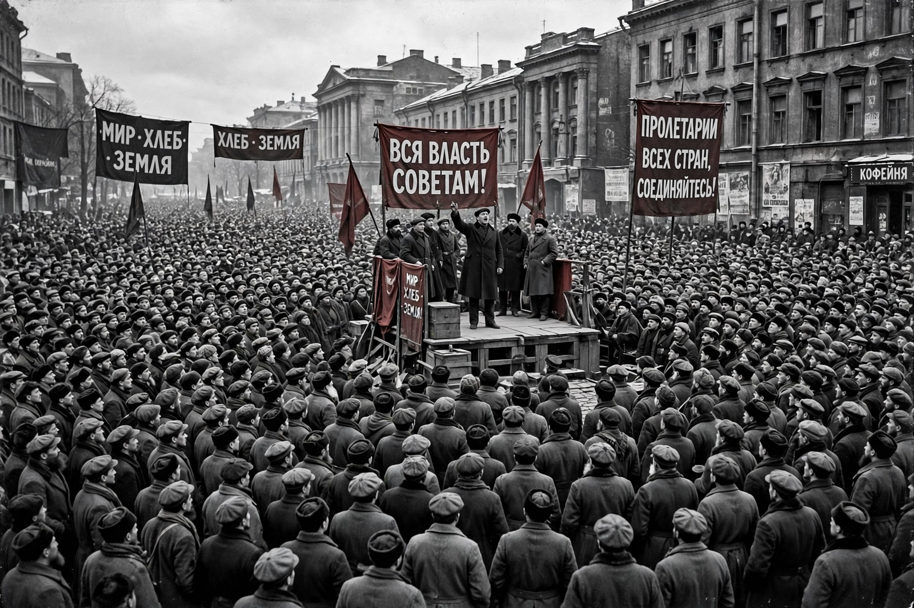

| Bolsheviks | |
 A mass meeting in revolutionary Petrograd, 1917 | |
| Founded | 1903 (split of the RSDLP) |
|---|---|
| Leader | Vladimir Lenin |
| Ideology | Marxism–Leninism; communism |
| Successor | All-Union Communist Party (Bolsheviks) → CPSU |
The Bolsheviks (from Russian bol'shinstvo, "majority") were the faction of the Russian Social Democratic Labour Party led by Vladimir Lenin that seized power in the October Revolution of 1917 and founded the Soviet state. Their rivals within the party, the Mensheviks ("minority"), favoured a broader, less centralised party.
The split occurred at the party's Second Congress in Brussels and London in 1903, in disputes over party membership and organisation: Lenin insisted on a disciplined party of professional revolutionaries, set out in his pamphlet What Is to Be Done? (1902), while Julius Martov favoured a mass party. The labels "majority" and "minority" came from a contested vote on the editorial board of the party newspaper Iskra; for much of the following decade the Mensheviks were in fact often the larger faction.
After the February Revolution overthrew the Tsar, Lenin returned to Petrograd and issued the April Theses, calling for "all power to the soviets". With Leon Trotsky organising the Petrograd Soviet's Military Revolutionary Committee, the Bolsheviks overthrew the Provisional Government on 25 October (7 November) 1917, decreeing peace and land redistribution.
The Bolsheviks won the ensuing Russian Civil War (1917–1922) against the White armies, ruling through a one-party state enforced by the Cheka secret police and the Red Terror. The party renamed itself the Russian Communist Party (Bolsheviks) in 1918; "Bolshevik" remained in the party's name until 1952. After Lenin's death in 1924, Joseph Stalin consolidated power, defeating Trotsky and the other Old Bolsheviks, most of whom perished in the Great Purge of the 1930s.